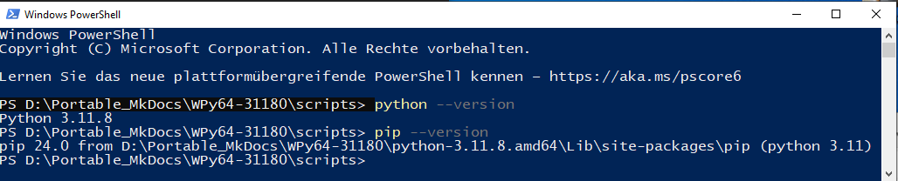
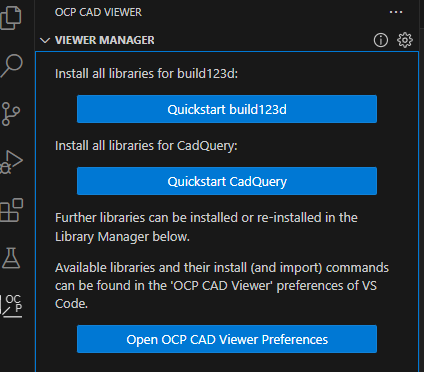

1) Python enviroment for build123d
Download WinPython 3.11.8 from Sourceforge: WinPython - 3.11.8
You find all WinPython Versions under this link: WinPython
WinPython is a portable setup of the Python runtime enviroment for windows. After downloading the file double click it (and thus execute it). You might need to tell windows or your browser that the file is safe and that you want to keep it and that you want to execute it.
After starting you will be asked to extract it. Choose a location where you want your files to be extracted to. For example: D:\Portable_build123d
Thats it your Python enviroment is setup and ready to run.
Go into the directory where you installed your Python enviroment (D:\Portable_MkDocs\WPy64-31180) and start "WinPython Powershell Prompt.exe".
This will open the windows Powershell. You can check your Python version by typing: python --version. Also check if your paket manager pip is installed by typing: pip --version

2) Install Visual Studio Code
Next you need to download Visual Studio Code but you need to select the ZIP version for X86: Download Visual Studio Code
Extract the downloaded file into the Folder D:\Portable_build123d\WPy64-31160\t
After extracting the files create a "data" directory in D:\VSCodePython\WPy64-31160\t
The "data" directory is needed to make VSCode portable. It is needed for config files and extensions which VSCode will save there.
3) Install Git Portable
Next download Git Portable. Select the "64-bit Git fot Windows Portable" Version: 64-bit Git for Windows Portable
As it is a portable version you can extract it anywhere you want. But it is a good idea to put it into the same folder as your other files. As all Visual Studio Code data ist saved into the data folder I will install Git also into the data folder.
D:\Portable_build123d\WPy64-31180\t\data\Git
Adjust the Visual Studio code settings.json which you will find in D:\Portable_build123d\WPy64-31180\t\data\user-data\User
{
"security.workspace.trust.untrustedFiles": "open",
"git.enabled": true,
"git.path": "D:\\Portable_build123d\\WPy64-31180\\t\\data\\Git\\bin\\git.exe"
}
(only the git.path and git.enabled entry is needed which you need to add)
3) Install Visual Studio Code extensions
Test that VSCode starts by using/starting: D:\VSCodePython\WPy64-31160\VS Code.exe
VSCode.exe works as a starter for VScode which was included by Winpython.
Open the extension manager with CTRL+SHIFT+X
Search for the Visual Studio Code Extension "Python" and install it.
Install the Visual Studio Code Extension "OCP CAD Viewer"
After installing the OCP CAD Viewer extension you will find a new icon "OCP". Select the OCP Icon and install build123d and/or Quickstart CadQuery

Follow the instructions to use OCP CAD Viewer extension to install Cadquery/build123 which will install the different necessary python packages using pip.
Thats it. Remember to add " from ocp_vscode import * " to your Cadquery/build123d files to be able to use OCP Cad Viewer. This should be the two first lines.
from ocp_vscode import *
from build123d import *